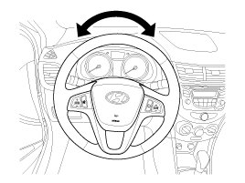
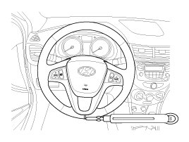

Steering: Testing and Inspection
Inspection
Steering Wheel Play Inspection
1. Turn the steering wheel so that the front wheels can face straight ahead.
2. Measure the distance the steering wheel can be turned without moving the front wheels.
Standard value:30mm (1.18in.) or less

3. If the play exceeds standard value, inspect the steering column, shaft, and linkages.
Checking stationary steering effort
1. Position the vehicle on a level surface and place the steering wheel in the straight ahead position.
2. Start the engine and turn the steering wheel from lock to lock several times to warm up the power steering fluid.
3. Attach a spring scale to the steering wheel. With the engine speed 900 - 1100rpm, pull the scale and read it as soon as the tires begin to turn.
Standard value:3.0kgf or less

4. If the measured value exceeds standard value, inspect the power steering gear box and pump.